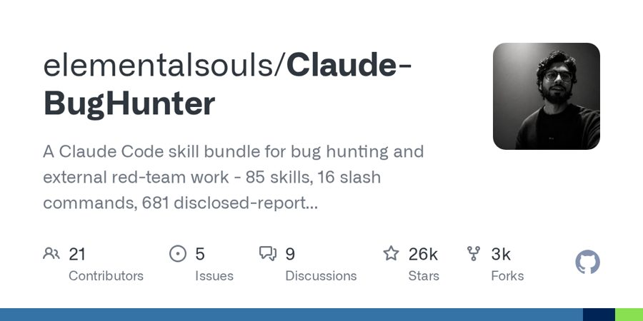
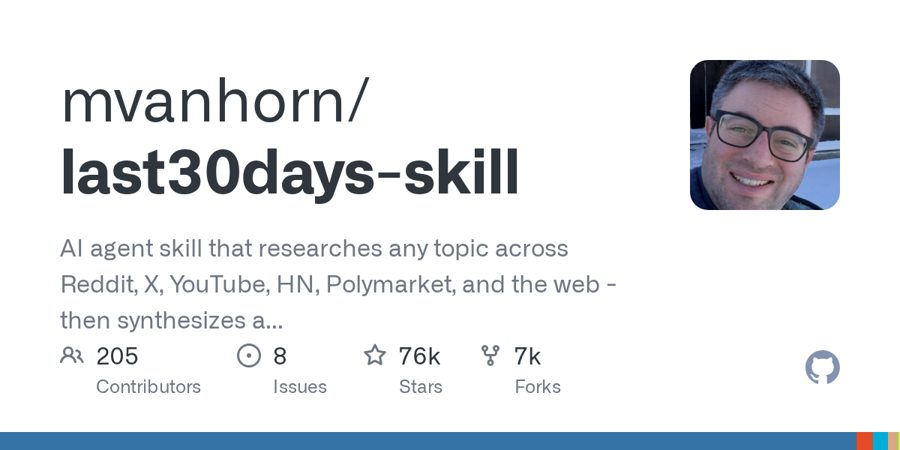

11 月 28 日 · 9 条选题
AI侵权与Agent技能包双热，安全类做借势补充。
01模特七海被AI短剧融脸成赛博恶役
模特七海发博称自己的脸被AI短剧拿去当反派角色，引发对AI融脸维权难的讨论。
为什么火
AI换脸侵权落到具体真人身上，普通人第一次感到"我的脸也可能被用"，情绪共鸣强。
切入角度
- 教读者3步自查：自己的照片有没有被AI短剧/换脸号搬运，附搜索方法
- 普通人防AI融脸的实操清单：发图打水印、关定位、少发正脸高清图
- 如果脸被AI用了怎么办：存证、平台投诉、维权路径图文流程
小红书标题
我的脸被AI短剧偷去当反派了
AI融脸防不住？先做这3件事
适合：爱发自拍的女生、内容创作者
02冯骥长文谈AI时代人怎么办
冯骥发布《后AI时代最重要的问题》长文，讨论AI时代普通人该如何自处，知乎同步热议。
为什么火
游戏圈大V谈AI焦虑，戳中"我会不会被AI取代"的普遍情绪。
切入角度
- 把长文观点翻译成普通人能用的3条AI协作习惯
- 用AI工具实测：长文里说的能力，哪些现在就能靠工具补上
- 打工人版AI焦虑自查表：哪些工作内容最该先交给AI
小红书标题
冯骥这篇AI长文，打工人该看
AI时代怎么办？我总结了3条
适合：有AI焦虑的职场普通用户
03用Claude在B站做游戏，点击即玩
B站AI创造公开赛作品，作者称全程使用Claude Fable 5.2开发搜打撤小游戏，点击链接即可游玩。
为什么火
零代码做游戏的门槛被拉到最低，普通人看到"我也能做"的可能性。
切入角度
- 拆解一条AI做小游戏的完整提示词流程，普通人照抄能跑
- 不用会编程：用AI做可玩小游戏的3个入门模板
- 对比B站AI创造公开赛几个作品，看哪种玩法最适合新手复刻
小红书标题
不会代码，我用AI做了个游戏
AI做小游戏，真的能玩！
适合：想玩AI创作但不会写代码的普通人
04Claude技能包扎堆上GitHub热榜

Claude-BugHunter技能包登GitHub热榜，含85个技能、16个斜杠命令；同期diagram-design、last30days-skill等Agent技能项目也在涨星。
为什么火
AI Agent从聊天走向"装技能就能干活"，工具党关注度集中爆发。
切入角度
- 把技能包概念讲成人话：给AI装插件到底能多干什么活
- 挑3个非技术也能用的AI技能（做图、查资料、写总结）实测
- 手把手：普通人怎么给自己的AI助手加一个"研究话题"技能
小红书标题
AI装个技能，效率直接翻倍
这3个AI技能包，普通人也能用
适合：想给AI助手加能力的进阶用户
05last30days：一个技能查遍全网热点

last30days-skill是一个AI Agent技能，可跨Reddit、X、YouTube、HN等平台研究任意话题并生成有依据的总结。
为什么火
"让AI帮你刷完全网再总结"正好对上做内容、做调研的刚需。
切入角度
- 用这个技能做选题调研：输入一个关键词，看它怎么汇总全网讨论
- 自媒体人实测：AI跨平台搜集资料 vs 自己手动搜，差多少时间
- 把这套思路搬到国内平台：用AI做小红书选题调研的替代玩法
小红书标题
让AI替我刷完全网再总结
做选题不用手动搜了，AI搞定
适合：自媒体选题、做调研的内容人
06Ming-Image-0.2设计demo上线
Ming-Image-0.2-Design的demo已在Hugging Face上线，可在浏览器输入提示词生成产品图、UI稿等。
为什么火
浏览器直接用、面向设计出图，正好切中电商和自媒体做图需求。
切入角度
- 用同一段提示词生成产品图和UI稿，实测效果对比
- 电商主图不用PS：这个demo的3种提示词写法
- 浏览器就能跑的设计模型，和常用出图工具怎么选
小红书标题
浏览器里就能出产品图了
这个AI出图demo，电商人先存
适合：电商卖家、做图的自媒体人
07房东AI助手说可晚交租，她被赶走
一名女子称房东的AI助手告诉她可以延迟交租，随后她仍被驱逐。
为什么火
AI替人做承诺却没人负责，普通人开始警惕"AI说的话算不算数"。
切入角度
- AI客服/助手说的话能不能当依据？普通人留证3招
- 遇到AI助手乱承诺怎么办：截图、书面确认、找人工
- 哪些场景别信AI助手：租房、退款、合同类对话清单
小红书标题
AI说可以晚交租，结果她被赶走
AI助手的话，别全信
适合：租房、常和AI客服打交道的普通人
08GPT 6.2 Astra解出一道历史谜题
有文章称GPT 6.2 Astra解决了一个历史谜题，引发讨论。
为什么火
"AI做研究"的案例最容易让普通人重新想象AI能干什么。
切入角度
- 普通人版AI查资料法：怎么让AI帮你梳理一个历史话题
- AI做研究靠谱吗？用一个小问题实测它会不会编
- 把"AI解谜"变成日常用法：旅行前让AI讲清一段历史
小红书标题
AI解开了个历史谜题？
用AI查历史，我试了一次
适合：爱用AI查资料、做功课的用户
09数学家担心AI让网络安全失效
有报道称数学家担心AI正让在线安全体系接近失效。
为什么火
安全焦虑人人相关，但需要落到普通人能做的动作上。
切入角度
- 普通人现在就该改的3个账号安全习惯
- AI时代密码怎么管：用AI帮你想密码靠不靠谱
- 别把敏感信息喂给AI：一份可贴墙的清单
小红书标题
AI让密码不安全了？先做这3步
这3个账号习惯，赶紧改
适合：关心账号安全的普通用户